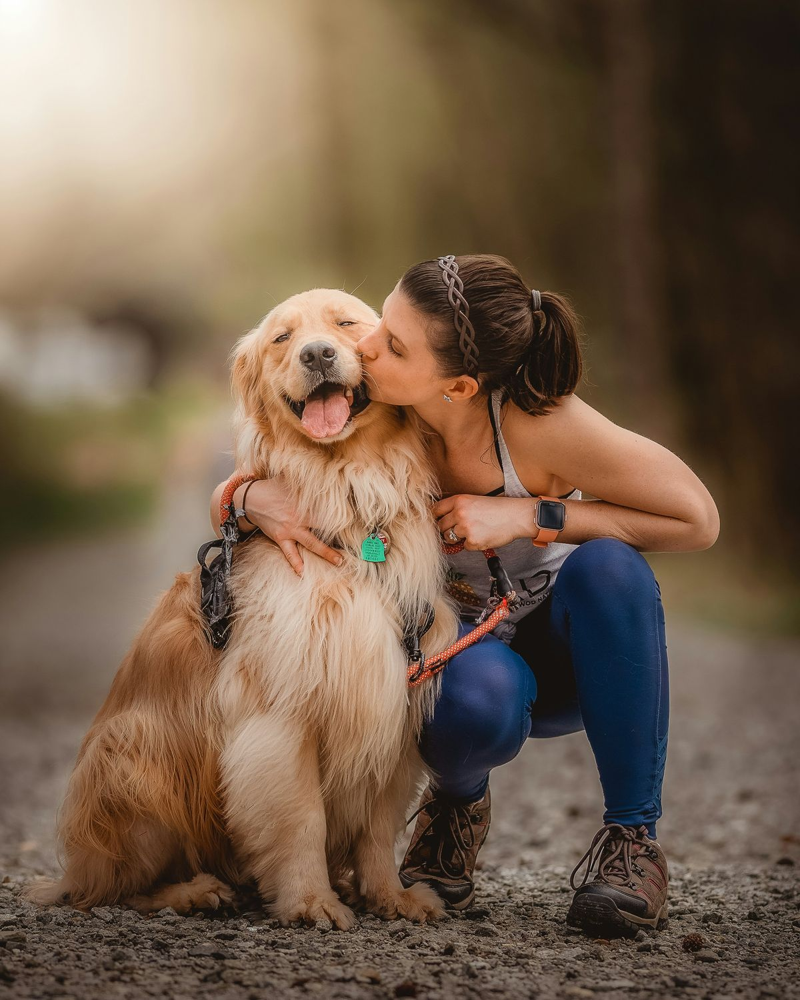
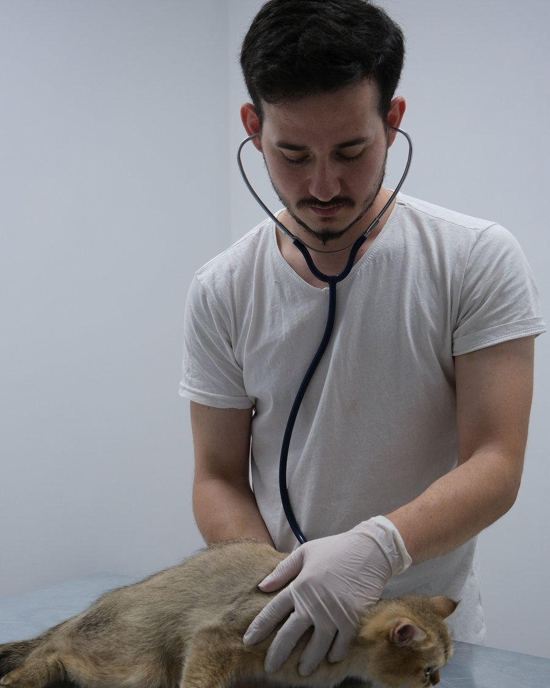
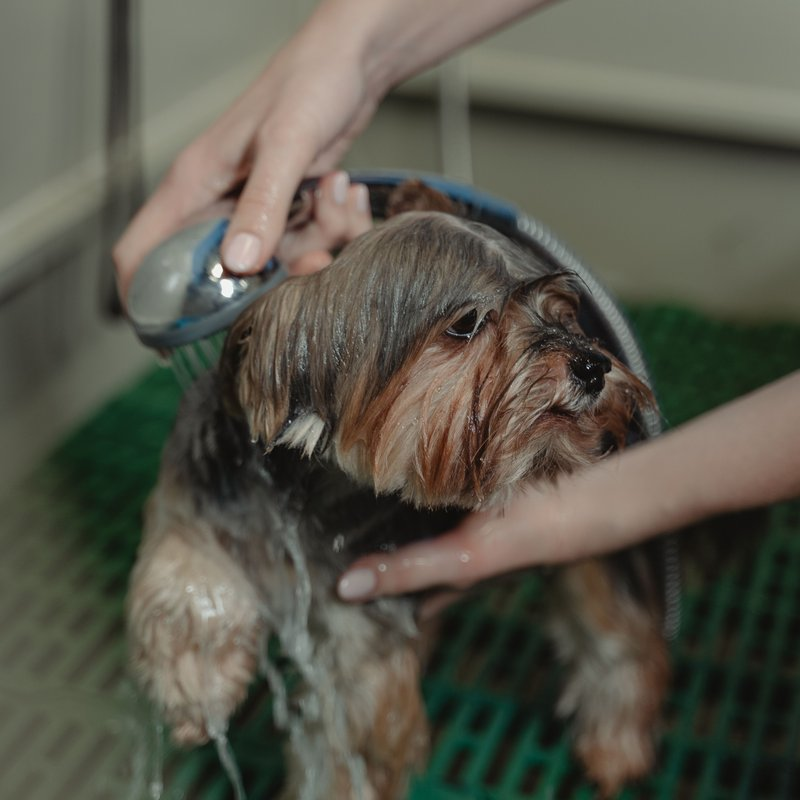
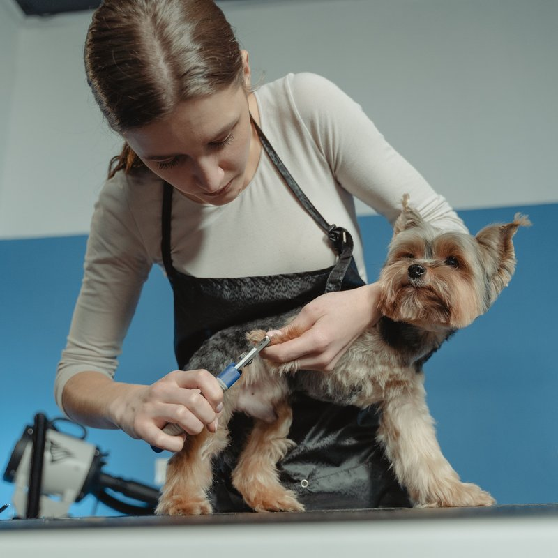
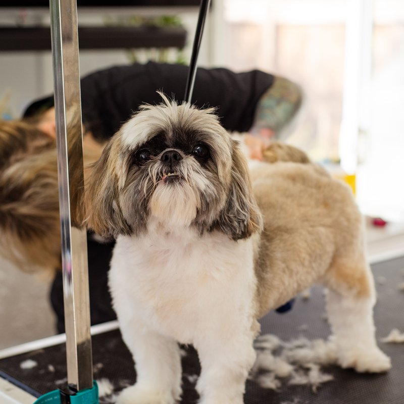
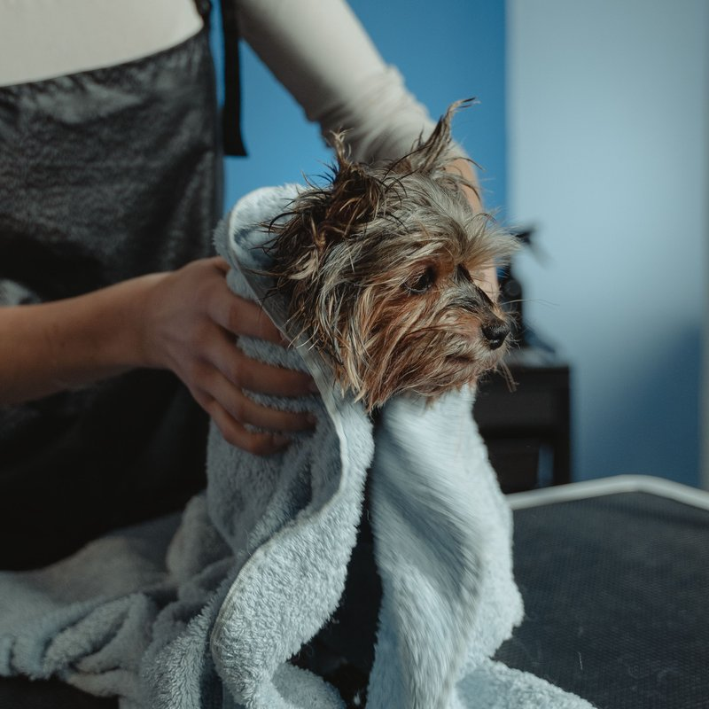

Consulta clínica
Avaliação completa do seu pet, com orientação clara sobre o que fazer a seguir.
Cerca de 30 minAgendamento necessário
Consulta, vacinação, exames, cirurgia e banho e tosa para cães e gatos, na Praia do Canto, Vitória — ES.
Agendar consultaEmergência? Ligue agora — atendemos sem agendamento das 8h às 20h, todos os dias.
(27) 90000-0000Seis frentes de atendimento pensadas para acompanhar seu pet em cada fase — da rotina ao imprevisto.
Avaliação completa do seu pet, com orientação clara sobre o que fazer a seguir.
Cerca de 30 minAgendamento necessárioImunização em dia, com orientação sobre o calendário ideal para a idade e o porte do pet.
Cerca de 15 minLeve a carteirinha, se tiverExames laboratoriais e de imagem para investigar com precisão o que está incomodando.
Alguns pedem jejum de 8–12hConfirme no agendamentoProcedimentos cirúrgicos com acompanhamento antes, durante e depois do centro cirúrgico.
Requer avaliação préviaAgendar com antecedênciaBanho e tosa higiênica ou na tesoura, com produtos indicados para o tipo de pelo.
1 a 2h, conforme porteAgendamento recomendadoAtendimento prioritário para situações urgentes, sem precisar de agendamento.
Atendimento imediatoLigue antes, se possívelA ansiedade de levar o pet ao veterinário costuma vir do que a gente não sabe o que vai acontecer. Por isso, é assim:
Marque o horário pelo WhatsApp ou telefone e conte um pouco do que está acontecendo.
Na recepção, seu pet é pesado e observado enquanto você dá mais detalhes à equipe.
Avaliação com calma, sem pressa, para entender o quadro antes de qualquer decisão.
Você sai com o cuidado explicado e já sabe se, e quando, precisa voltar.

A Maré Pet nasceu de uma ideia simples: consulta de pet não devia ser um momento de aflição — nem para o animal, nem para quem ama ele.
Aqui, cada visita é conduzida com calma. A equipe explica cada passo antes de agir, e trata cada pet do jeito que ele precisa naquele dia — sem pressa e sem sustos.
Atendemos cães e gatos de todos os portes, na Praia do Canto, Vitória — ES.
Produtos indicados para o tipo de pelo, secagem com cuidado e tosa na medida certa — higiênica ou completa, na tesoura ou na máquina.




Bastidores da tosa — 8 segundos, sem som.
Conteúdo ilustrativo — depoimentos fictícios, criados para fins de demonstração deste projeto.
Levei o Toffee com o coração apertado e saí tranquila. Explicaram tudo antes de fazer qualquer coisa.
Ana Exemplo
tutora do Toffee
A Mel odeia sair de casa, mas dessa vez nem estranhou tanto. Equipe com muita paciência.
Rafael Ilustrativo
tutor da Mel
O banho e tosa ficou impecável e o Bento voltou pra casa cheiroso e feliz.
Beatriz Modelo
tutora do Bento
Atendimento fictício, criado para fins de demonstração deste projeto — número e botão de WhatsApp não funcionam de verdade.
| Segunda a sexta | 8h às 20h |
|---|---|
| Sábado | 8h às 14h |
| Domingo | Fechado, exceto emergência |
| Emergência | 8h às 20h, todos os dias |